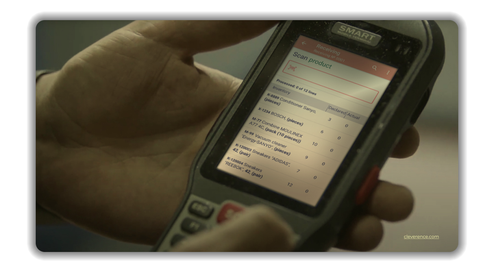

Intuitive design meets technical excellence, guaranteeing error-free operations with every scan

This video demonstrates using a mobile device and Warehouse 15 software in Odoo to receive products. The process involves checking quantities, scanning barcodes, selecting items manually, and printing barcode labels. It also covers tracking items with lot numbers and unique serial numbers. Once all items are scanned, the document is updated to "done" status and any missing items are listed as back orders.
Whether you operate with a 1-step or 2-step process, we've got you covered. View purchase orders, scan barcoded items or select from a list, and handle items with lot or unique serial numbers - all in a few taps. Items are verified in real-time, and any discrepancies generate an automatic Backorder, ensuring nothing is overlooked. Get items in place swiftly, be it directly to your warehouse/bin locations or initially to your 'Input' area.
Harness the power of barcode scanning with our comprehensive pick & ship feature for Odoo. Designed to eliminate errors and boost efficiency, choose between the direct 1-step fulfillment or the robust 2-step process. Review sales orders, scan barcoded products or pick them from a list, and manage items with lot or distinct serial numbers - all with a couple of swift taps. Orders are confirmed in real-time, and any mismatches instantly result in an automatic Backorder, guaranteeing no detail goes unnoticed.
Products with specific traceability requirements are handled with precision. For items tracked by lot numbers, once scanned, the system prompts you for the relevant lot details, offering a handy list to choose from if needed. For those unique items with individual serial numbers, the software efficiently captures each number, and in the event of consecutive serials, inputting the starting and ending numbers suffices. The system intelligently fills in the rest, ensuring accurate tracking and inventory management.
Warehouse 15 allows you to scan multiple items in quick succession, making inventory checks or large shipments more manageable. For items equipped with barcodes, a simple scan is all that's required for immediate identification within the system. Items without barcodes aren't left behind; they can be swiftly selected from a predefined list on your mobile device, ensuring that every product, irrespective of its barcoding status, is accurately accounted for in real-time. Barcode integration in Warehouse 15 for Odoo provides an efficient and error-free way to manage your inventory. With the ability to scan items directly into the system, the chances of manual data entry errors are minimized, leading to a more streamlined and effective inventory management process. If for any reason you cannot scan the barcode directly, you can also manually enter the barcode number into the designated field in the software.
Be sure that your mobile device with a barcode scanner is compatible with the software you plan to use. Warehouse 15 is designed to work with a wide range of common devices available in the market.
Warehouse 15 introduces a robust and efficient system for managing bin locations using barcodes, often referred to as 'addressed storage'.
Incorporating barcoded bin locations with Warehouse 15 for Odoo transforms warehouse management. It ensures precise location tracking, speeds up various processes from receiving to shipping, and significantly reduces errors that can occur from manual handling. The system not only simplifies operational workflows but also offers analytical insights for better space and inventory management.
Each storage bin, shelf, or location within the warehouse is designated a unique barcode. This isn't merely a numeric or alphanumeric code; it's a scannable label that's strategically placed on the storage unit, ensuring easy access for scanning.
When items are received or relocated within the warehouse, the user can scan the barcode of the product and then the barcode of the bin location where it's being stored. This verification ensures items are stored at their intended locations. The system then updates the storage location of that item in real-time within Odoo's database.
During the fulfillment phase, workers are guided to the exact location of items via the bin's barcode. The order list will display the bin barcode, or location address, allowing workers to swiftly scan the location, verify it, and pick the item. This reduces the time taken to search for products and eliminates human errors.
Periodic stock checks become more efficient with barcoded bin locations. Employees can scan a bin location to quickly view or audit the items that should be present within that space. Any discrepancies can be noted and addressed immediately.
Please select the licensing model that aligns best with your operational setup and budgetary considerations.
A one-time payment is required for each mobile device license. This option ensures complete autonomy over the software without any recurring costs.
This model operates on a monthly payment system per mobile device license, providing the flexibility and scalability of a cloud-based solution.
Per-device licensing refers to the licensing model where the software's usage rights are tied to individual mobile devices rather than users or installations. In simpler terms, a single license permits the software's operation on one specific mobile device.
AMultiple users can access and use the software on a licensed device, but the software cannot be used on multiple devices with a single license.
Ideal for scenarios where several users share a single device, like a workstation or terminal, in shifts or at different times. This can reduce the total number of licenses needed.
The software's integrity is maintained as it's restricted to licensed devices, preventing unauthorized installations or spread across numerous machines.
Easy tracking and auditing, as IT teams only need to account for licensed devices, not individual users.
By choosing a per-device licensing model for our Odoo Inventory Management App, organizations can find a balance between cost, flexibility, and control, depending on their specific operational needs.